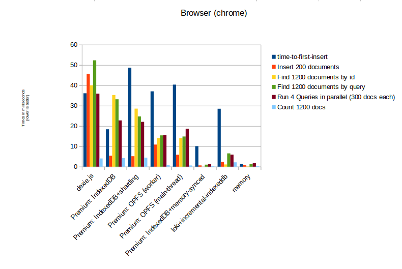

15.0.0
The release 15.0.0 is used for major refactorings in the migration plugins and performance improvements of the RxStorage implementations.
LinkedIn
Stay connected with the latest updates and network with professionals in the RxDB community by following RxDB's official LinkedIn page!
Performance
Performance has improved a lot. Much work has been done to reduce the CPU footprint of RxDB so that when writes and reads are performed on the database, the JavaScript process can start updating the UI much faster. Also there have been a lot of improvements to the IndexedDB RxStorage which now runs in a Write-Ahead Logging (WAL) mode which makes write operations about 4x as fast. The whole RxStorage interface has been optimized so that it has to run less operations which improves overall performance. Read more

Replication
Replication options (like url), are no longer used as replication state identifier. Changing the url without having to restart the replication, is now possible. This is useful if you change your replication url (like path/v3/) on schema changes and you do not want to restart the replication from scratch. You can even swap the replication plugin while still keeping the replication state. The couchdb replication now also requires an replicationIdentifier.
The replication meta data is now also compressed when the KeyCompression Plugin is used.
The replication-protocol does now support attachment replication. This clears the path to add the attachment replication to the other RxDB replication plugins.
Rewrite schema version migration
The schema migration plugin has been fully rewritten from scratch.
From now on it internally uses the replication protocol to do a one-time replication from the old collection to the new one. This makes the code more simple and ensures that canceled migrations (when the user closes the browser), can continue from the correct position.
Replication states from the RxReplication are also migrated together with the normal data.
Previously a migration dropped the replication state which required a new replication of all data from scratch, even if the
client already had the same data as the server. Now the assumedMasterState and checkpoint are also migrated so that
the replication will continue from where it was before the migration has run.
Also it now handles multi-instance runtimes correctly. If multiple browser tabs are open, only one of them (per RxCollection) will run the migration. Migration state events are propagated across browser tabs.
Documents with _deleted: true will also be migrated. This ensures that non-pushed deletes are not dropped during migrations and will
still be replicated if the client goes online again.
Set eventReduce:true as default
The EventReduce algorithm is now enabled by default.
Use crypto.subtle.digest for hashing
Using crypto.subtle.digest from the native WebCrypto API is much faster, so RxDB now uses that as a default. If the API is not available, like in React-Native, the ohash module is used instead. Also any custom hashFunction can be provided when creating the RxDatabase. The hashFunction must now be async and return a Promise.
Fix attachment hashing
Hashing of attachment data to calculate the digest is now done from the RxDB side, not the RxStorage. If you set a custom hashFunction for the database, it will also be used for attachments digest meta data.
Requires at least typescript version 5.0.0
We now use export type * from './types'; so RxDB will not work on typescript versions older than 5.0.0.
Require string based $regex
Queries with a $regex operator must now be defined as strings, not with RegExp objects. You can still pass RegExp's flags in $options parameter. RegExp are mutable objects, which was dangerous and caused hard-to-debug problems.
Also stringification of the $regex had bad performance but is required to send queries from RxDB to the RxStorage.
Refactor dexie.js RxStorage
The dexie.js storage was refactored to add some missing features:
- Attachment support
- Support for boolean indexes
RxLocalDocument.$ emits a document instance, not the plain data
This was changed in v14 for a normal RxDocument.$ which emits RxDocument instances. Same is now also done for local documents.
Fix return type of .bulkUpsert
Equal to other bulk operations, bulkUpsert will now return an error and a success array. This allows to filter for validation errors and handle them properly.
Add dev-mode check for disallowed $ref fields
RxDB cannot resolve $ref fields in the schema because it would have a negative performance impact.
We now have a dev-mode check to throw a helpful error message if $refs are used in the schema.
Improve RxDocument property access performance
We now use the Proxy API instead of defining getters on each nested property. Also fixed #4949
patternProperties is now allowed on the non-top-level of a schema #4951
Add deno support
The RxDB test suite now also runs in the deno runtime. Also there is a DenoKV based RxStorage to use with Deno Deploy.
Memory RxStorage
Rewrites of the Memory RxStorage for better performance.
- Writes are 3x faster
- Find-by id is 2x faster
Memory-Synced storage no longer supports replication+migration
The memory-synced storage itself does not support replication and migration. This was allowed in the past, but dangerous so now there is an error that throws. Instead you should replicate the underlying parent storage. Notice that this is only for the memory-synced storage, NOT for the normal memory storage. There the replication works like before.
Added Logger Plugin
I added a logger plugin to detect performance problems and errors.
Documentation is now served by docusaurus
In the past we used gitbook which is no longer maintained and had some major issues. Now the documentation of RxDB is rendered and served with docusaurus which has a better design and maintenance.
Replaced modfijs with mingo package
In the past, the modifyjs was used for the update plugin. This was replaced with the mingo library which is more up to date and already used in RxDB for the query engine.
Changes to the RxStorage interface
We no longer have RxStorage.statics.prepareQuery(). Instead all storages get the same prepared query as input for the .query() method. If a storage requires some transformations, it has to do them by itself before running the query. This change simplifies the whole RxDB code base a lot and the previous assumption of having a better performance by pre-running the query preparation, turned out to be not true because the query planning is quite fast.
Removed the RxStorage.statics property. This makes configuration easier especially for the remote storage plugins.
The RxStorage itself will now return _deleted=true documents on the .query() method. This is required for upcoming plugins like the server plugin where it must be able to run queries on deleted documents.
Notice that this is only for the RxStorage itself, RxDB queries will run like normal and NOT contain deleted documents in their results.
Changed the response type of RxStorageInstance.bulkWrite() from indexed (by id) objects to arrays for better performance.
Other changes
- Added
RxCollection.cleanup()to manually call the cleanup functions. - Rename send$ to sent$:
myRxReplicationState.send$.subscribeworks only if the sending is successful. Therefore, it is renamed tosent$, notsend$. - We no longer ship
dist/rxdb.browserify.jsanddist/rxdb.browserify.min.js. If you need these, build them by yourself. - The example project for vanilla javascript was outdated. I removed it to no longer confuse new users.
- REPLACE
new Date().getTime()withDate.now()which is 2x faster. - Renamed replication-p2p to replication-webrtc. I will add more p2p replication plugins in the future, which are not based on WebRTC.
- REMOVED
RxChangeEvent.eventId. If you really need a unique ID, you can craft your own one based on the document_revandprimary. - REMOVED
RxChangeEvent.startTimeandRxChangeEvent.endTimeso we do not have to callDate.now()once per write row. - ADDED
EventBulk.startTimeandEventBulk.endTime. - FIX
database.remove()does not work on databases with encrypted fields. - FIX react-native: replaceAll is not a function
- FIX Throttle calls to forkInstance on push-replication to not cause memory spikes and lagging UI
- FIX PushModifier applied to pre-change legacy document, resulting in old document sent to endpoint #5256
- Attachment compression is now using the native
Compression Streams API. - FIX #5311 URL.createObjectURL is not a function in a browser plugin environment(background.js)
- FIX
structuredClonenot available in ReactNative #5046 - The following things moved out of beta:
Changes to the 👑 Premium Plugins
storage-migration plugin moved from premium to open-core
The storage migration plugin can be used to migrate data between different RxStorage implementation or to migrate data between major RxDB versions. This previously was a 👑 premium plugin, but now it is part of the open-core. Also the params syntax changed a bit read more.
Changes in pricing
The pricing of the premium plugins was changed. This makes it cheaper for smaller companies and single individuals.
Added perpetual license option
By default you are not allowed to use the premium plugins after the license has expired and you will no longer be able to install them. But you can choose the Perpetual license option. With the perpetual license option, you can still use the plugins even after the license is expired. But you will no longer get any updates from newer RxDB versions.
You can help!
There are many things that can be done by you to improve RxDB:
- Check the BACKLOG for features that would be great to have.
- Check the breaking backlog for breaking changes that must be implemented in the future but where I did not have the time yet.
- Check the TODOs in the code. There are many small improvements that can be done for performance and build size.
- Review the code and add tests. I am only a single human with a laptop. My code is not perfect and much small improvements can be done when people review the code and help me to clarify undefined behaviors.
- Update the example projects some of them are outdated and need updates.